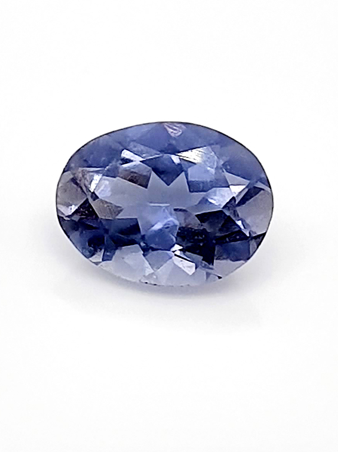

cordiérite
Système cristalin : orthorhombique
Indice de réfraction : 1,532 à 1,565
Birèfringence : biaxe -0,008 à 0,014
Densité : 2,57 à 2,66
Dureté : 7
Couleur : violet bleu
Particularité : Trichroisme intense
Image :
